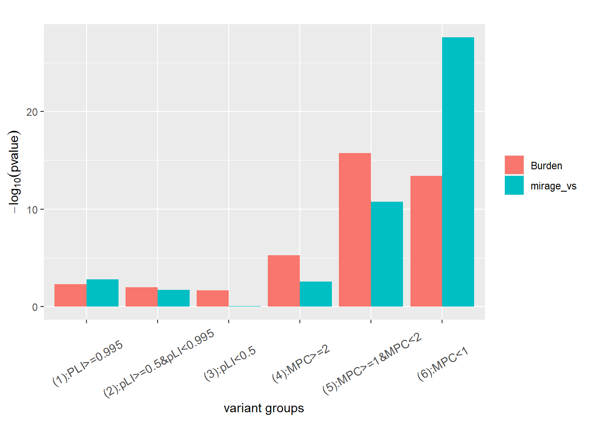
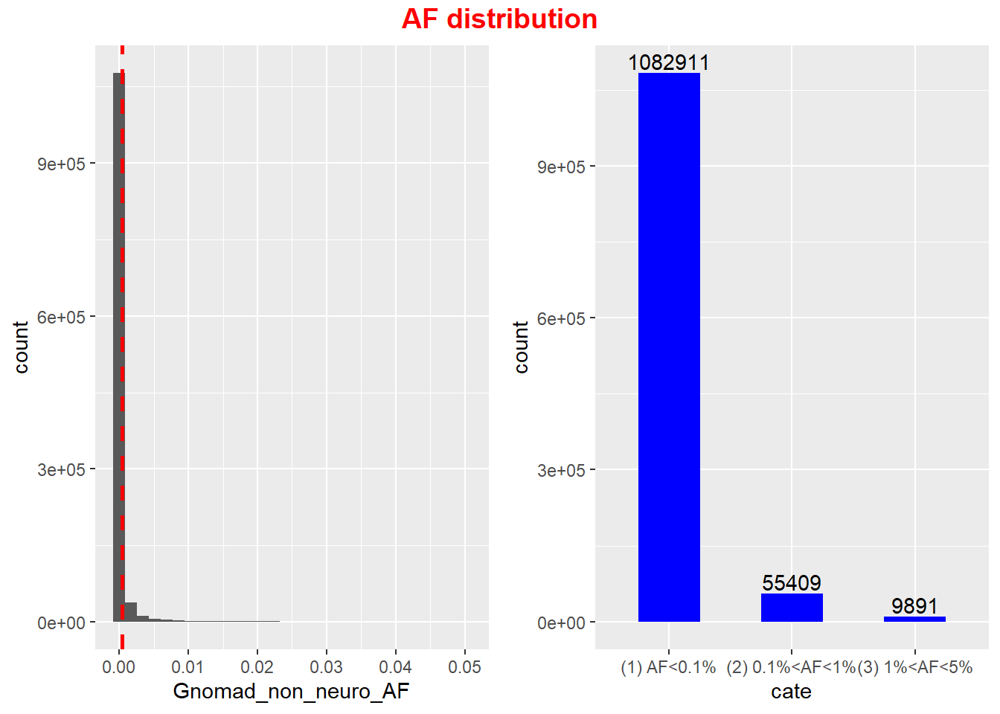
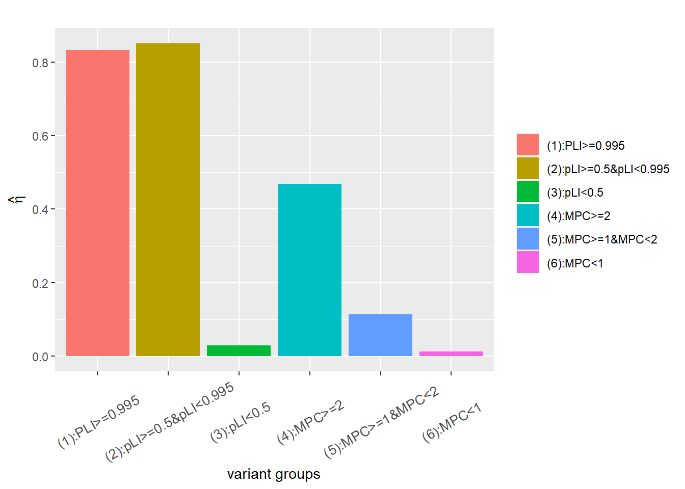

ASC new sample gene set analysis
Genome-wide analysis
Variant count in PTV with PLI>=0.995
| AF cutoff | Trans | Untrans |
|---|---|---|
| <0.000001 | 659 | 655 |
| <0.00001 | 779 | 805 |
| <0.0001 | 876 | 966 |
| <0.001 | 1164 | 1413 |
When AF <0.1%, there are 1164 transmitted variants and 1413 untransmitted, not consistent with numbers in cell paper 695 vs 557.
pLI>=0.995isPTV==TisIndel=="FALSE"Gnomad_non_neuro_AF<AF_cutoffnum_alleles<5
| filter | Trans | Untrans |
|---|---|---|
| VQSLOD<3.75 | 255 | 546 |
| VQSLOD<5.13 | 300 | 624 |
| VQSLOD<9 | 1151 | 1415 |
| QD >= 1 & AS_SOR <= 3 & AS_ReadPosRankSum >= -0.8 | 818 | 785 |
| QD >= 10.5 & AS_SOR <= 3 & AS_ReadPosRankSum >= -0.8 | 714 | 567 |
| QD >= 11 & AS_SOR <= 3 & AS_ReadPosRankSum >= -0.8 | 678 | 526 |
| QD >= 1 & AS_SOR <= 3 & AS_ReadPosRankSum >= -2 | 956 | 946 |
| QD >= 1 & AS_SOR <= 5 & AS_ReadPosRankSum >= -0.8 | 821 | 804 |
| QD >= 1 & AS_SOR <= 10 & AS_ReadPosRankSum >= -0.8 | 822 | 861 |
- Kyle suggested: QD >= 1 & AS_SOR <= 3 & AS_ReadPosRankSum >= -0.8
- cutoff for
AS_ReadPosRankSumcould decrease to, for instance -2, or even lower, while maintaining balanced T/UT, but the OR consistently stay around 1.01, a bit away from 1.2 - OR will increase with increasing cutoff for
QD. When cutoff =10.5, both OR and variant counts are close to numbers in paper, but when cutoff >10.5, the variant count will become smaller than than in paper, seems not appropriate.
- With balanced T/UT, increase of cutoff for
AS_SORwill decrease OR, even below 1, becoming depleted
pLI>=0.995isPTV==TisIndel=="FALSE"Gnomad_non_neuro_AF<0.001
plot of QD value

## Min. 1st Qu. Median Mean 3rd Qu. Max.
## 0.323 11.300 12.480 12.440 13.560 63.520use filters
isIndel=="FALSE"AS_SOR <= 3AS_ReadPosRankSum >= -0.8
Run mirage-vs on 6 variant groups in Kyle data without gene level information
- Use mirage-vs to test if there are signals in six variant
groups
- filter
Gnomad_non_neuro_AF<0.05was applied
This figure shows the comparison between burden test (one side two sample poisson test) and mirage-vs for proband in 6 variant groups. \(\gamma=6\) for 3 PLI variant groups and \(\gamma=3\) for another 3 MPC groups when running mirage.
## # A tibble: 6 x 7
## X No_case No_contr OR pval eta_est eta_pval
## <chr> <int> <int> <dbl> <int> <dbl> <dbl>
## 1 PLI>=0.995 4436 7317 0.606 1 0.00662 7.98e- 64
## 2 pLI within (0.5,0.995) 10523 14050 0.749 1 0.00342 2.38e- 40
## 3 pLI<0.5 241695 258839 0.934 1 0.00331 9.61e-122
## 4 MPC>=2 62501 70221 0.890 1 0.00383 3.47e- 34
## 5 MPC within (1,2) 372944 389959 0.956 1 0.00310 7.05e- 45
## 6 MPC<1 5085602 5154878 0.987 1 0.00127 1.14e-160
rare variants with PLI>=0.995
gene set analysis taking into account gene level information
Run mirage on all 17988 genes and \(\gamma=6\) for 3 PLI variant groups and \(\gamma=3\) for 3 MPC groups.
apply filter
Gnomad_non_neuro_AF<0.05
| variant category | parameter | estimate | p value | |
|---|---|---|---|---|
| \ | \(\hat{\delta}\) | 0.0201 | 0 | |
| (1):PLI>=0.995 | \(\hat{\eta}_1\) | 0.17 | \(1.72\times 10^{-66}\) | |
| (2):0.5<=pLI<0.995 | \(\hat{\eta}_2\) | 0.04 | \(3.90\times 10^{-39}\) | |
| (3):pLI<0.5 | \(\hat{\eta}_3\) | 0.06 | \(1.55\times 10^{-120}\) | |
| (4):MPC>=2 | \(\hat{\eta}_4\) | 0.06 | \(1.55\times 10^{-36}\) | |
| (5):1<=MPC<2 | \(\hat{\eta}_5\) | 0.12 | \(6.95\times 10^{-57}\) | |
| (6):0<=MPC<1 | \(\hat{\eta}_6\) | 0.05 | \(2.69\times 10^{-182}\) |

Below are top ranked genes.
## # A tibble: 17,987 x 4
## X Gene BF post.prob
## <int> <chr> <dbl> <dbl>
## 1 536 FHOD3 1.16e39 1
## 2 933 ADCY2 1.24e29 1
## 3 1839 NABP2 7.66e25 1
## 4 4978 IL23R 9.38e18 1
## 5 6465 PRB1 8.70e20 1
## 6 7904 NPIPA1 3.13e45 1
## 7 9990 KIR2DL3 4.34e17 1
## 8 10155 PRAM1 2.51e34 1
## 9 11473 NEFH 3.64e35 1
## 10 13705 HLA-DRB5 1.38e20 1
## # ... with 17,977 more rows102 ASD genes in cell paper
variant set (VS) analysis without gene level information
This figure shows the comparison between burden test (one side two sample poisson test) and mirage-vs for proband in 6 variant groups. \(\gamma=6\) for 3 PLI variant groups and \(\gamma=3\) for 3 MPC groups when running mirage.
## # A tibble: 6 x 7
## X No_case No_contr OR pval eta_est eta_pval
## <chr> <int> <int> <dbl> <dbl> <dbl> <dbl>
## 1 PLI>=0.995 132 381 0.346 1 0.0000375 1
## 2 pLI>=0.5&pLI<0.995 45 40 1.12 0.332 0.166 0.324
## 3 pLI<0.5 32 22 1.45 0.110 0.230 0.269
## 4 MPC>=2 788 955 0.825 1.00 0.000301 1
## 5 MPC>=1&MPC<2 5481 5762 0.951 0.996 0.000653 1
## 6 MPC<1 30680 30991 0.990 0.896 0.000134 1
gene set analysis taking into account gene level information
\(\gamma=6\) for LoF variant and \(\gamma=3\) for missense when running mirage.
apply filter
Gnomad_non_neuro_AF<0.05
| variant categories | parameter | estimate | p value | |
|---|---|---|---|---|
| \ | \(\hat{\delta}\) | 0.40 | \(1.10\times 10^{-6}\) | |
| PLI>=0.995 | \(\hat{\eta}_1\) | 0.1452 | \(1.13\times 10^{-6}\) | |
| 0.5<=pLI<0.995 | \(\hat{\eta}_2\) | 1 | 0.1546 | |
| pLI<0.5 | \(\hat{\eta}_3\) | 0.7379 | 0.2145 | |
| MPC>=2 | \(\hat{\eta}_4\) | 0.1789 | \(5.20\times 10^{-4}\) | |
| 1<=MPC<2 | \(\hat{\eta}_5\) | \(8.13\times 10^{-5}\) | 1 | |
| 0<=MPC<1 | \(\hat{\eta}_6\) | \(6.64\times 10^{-12}\) | 1 |

Top 5% constraint genes
Burden analysis
Look at all variants with AF<10E-4
In old sample, we observe signal in constraint genes with \(AF<10^{-4}\).
There are 199395 transmitted variants in proband and 204963 untransmitted variants.
poisson.test(c(sum(new_sample_trans_data_Constraint_Gene$Transmitted_proband), sum(new_sample_trans_data_Constraint_Gene$Untransmitted_proband)), c(num.family, num.family), r=1, alternative="greater")##
## Comparison of Poisson rates
##
## data: c(sum(new_sample_trans_data_Constraint_Gene$Transmitted_proband), sum(new_sample_trans_data_Constraint_Gene$Untransmitted_proband)) time base: c(num.family, num.family)
## count1 = 162760, expected count1 = 159218, p-value < 2.2e-16
## alternative hypothesis: true rate ratio is greater than 1
## 95 percent confidence interval:
## 1.03942 Inf
## sample estimates:
## rate ratio
## 1.045505Run MIRAGE-VS for all variants together
Put all variants with AF<10E-4 in one category and run MIRAGE-VS. \(\widehat{\eta}=0.0041\), p value is \(1.6\times 10^{-9}\).
Run MIRAGE-VS on constraint genes with 6 variant groups in cell paper without gene level information
This figure shows the comparison between burden test (one side two sample poisson test) and mirage-vs for proband in 6 variant groups.
\(\gamma=6\) for 3 PLI variant groups and \(\gamma=3\) for 3 MPC groups when running mirage.
apply filter
Gnomad_non_neuro_AF<0.05
## # A tibble: 6 x 7
## X No_case No_contr OR pval eta_est eta_pval
## <chr> <int> <int> <dbl> <dbl> <dbl> <dbl>
## 1 (1):PLI>=0.995 712 1603 0.444 1 0.00568 1.77e-29
## 2 (2):pLI>=0.5&pLI<0.995 645 898 0.718 1.00 0.0000572 1 e+ 0
## 3 (3):pLI<0.5 1976 2694 0.733 1 0.000204 1 e+ 0
## 4 (4):MPC>=2 10068 11577 0.870 1 0.000192 1 e+ 0
## 5 (5):MPC>=1&MPC<2 54752 57131 0.958 1.00 0.00128 1.29e- 6
## 6 (6):MPC<1 157653 160577 0.982 1.00 0.000326 1 e+ 0
gene set analysis using mirage taking into account gene level information
- \(\gamma=6\) for PLI variant groups and \(\gamma=3\) for MPC groups when running mirage.
- apply filter
Gnomad_non_neuro_AF<0.05
| variant category | parameter | estimate | p value | |
|---|---|---|---|---|
| \ | \(\hat{\delta}\) | 0.0911 | 0 | |
| (1):PLI>=0.995 | \(\hat{\eta}_1\) | 0.1509 | 0 | |
| (2):0.5<=pLI<0.995 | \(\hat{\eta}_2\) | \(1.14\times 10^{-48}\) | 1 | |
| (3):pLI<0.5 | \(\hat{\eta}_3\) | 0.5452 | \(8.72\times 10^{-11}\) | |
| (4):MPC>=2 | \(\hat{\eta}_4\) | \(1.03\times 10^{-8}\) | 1 | |
| (5):1<=MPC<2 | \(\hat{\eta}_5\) | 0.0258 | \(1.75\times 10^{-16}\) | |
| (6):0<=MPC<1 | \(\hat{\eta}_6\) | 0.0263 | \(1.41\times 10^{-10}\) |
Below are top ranked genes.
## # A tibble: 857 x 4
## X Gene BF post.prob
## <int> <chr> <dbl> <dbl>
## 1 267 ADCY2 6.64e38 1
## 2 123 NF1 1.03e16 1.00
## 3 334 FMN2 4.37e 9 1.00
## 4 639 HLA-C 9.33e 7 1.00
## 5 560 DHX38 1.16e 4 0.999
## 6 640 HLA-B 3.85e 3 0.997
## 7 128 ACLY 1.66e 2 0.943
## 8 84 FRY 4.52e 0 0.312
## 9 565 KAT2A 3.93e 0 0.283
## 10 581 NKPD1 3.92e 0 0.282
## # ... with 847 more rowsTop genes
Those top genes with large BF do not have burden.
## # A tibble: 10 x 5
## Gene BF Transmitted_proband Untransmitted_proband OR
## <chr> <dbl> <dbl> <dbl> <dbl>
## 1 ADCY2 6.64e38 6584 6408 1.03
## 2 NF1 1.03e16 3807 3810 0.999
## 3 FMN2 4.37e 9 12902 13084 0.986
## 4 HLA-C 9.33e 7 48 153 0.314
## 5 DHX38 1.16e 4 15778 15437 1.02
## 6 HLA-B 3.85e 3 1613 1911 0.844
## 7 ACLY 1.66e 2 1775 1761 1.01
## 8 FRY 4.52e 0 13202 13351 0.989
## 9 KAT2A 3.93e 0 3572 3522 1.01
## 10 NKPD1 3.92e 0 1680 1617 1.04Vairants driving the signal in top gene
variants that drive the BF of top genes. Those variants surviving
after filter AF<5% has close to 10 times untransmitted
variants than transmitted, thereby drive the BF to a high number.
* 148 5:7757570:TGGCCGTGTTCAACATGGTAAGTCCCAGAGCAC:T ADCY2 0.00882 15 219 1
> BF.var.inte(15, 219, 3, 3, num.family, num.family)
[1] 6.321461e+36
In gene ADCY2, there is one variant with `15 219 1 6.015290e+39 1` driving the signal.
* 17:31232075:A:T NF1 11 123 5 1.022707e+18 5
* 1:240207775:C:T FMN2 23 130 6 202948206699 6
* 6:31271622:C:CGGAG HLA-C 4 43 3 3.113611e+02
6:31271643:A:T HLA-C 3 43 6 1.513167e+03 6
* 16:72109460:GAGCT:G DHX38 35 122 3 4.678945e+04 3
This R Markdown site was created with workflowr